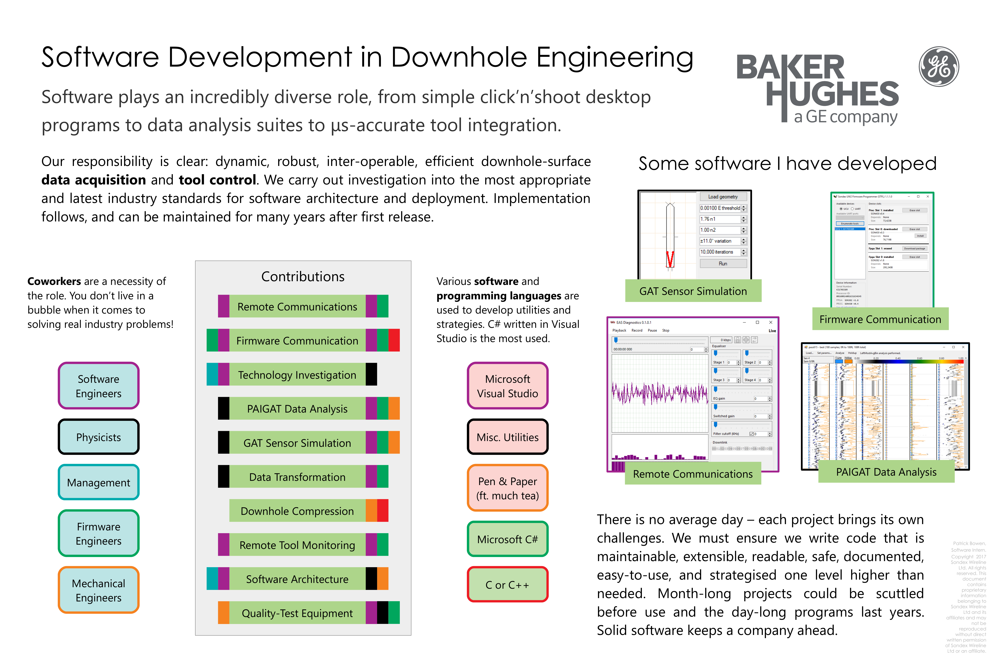
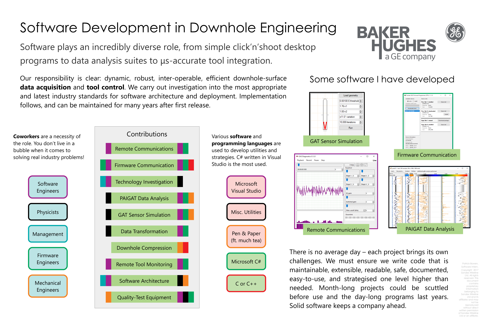
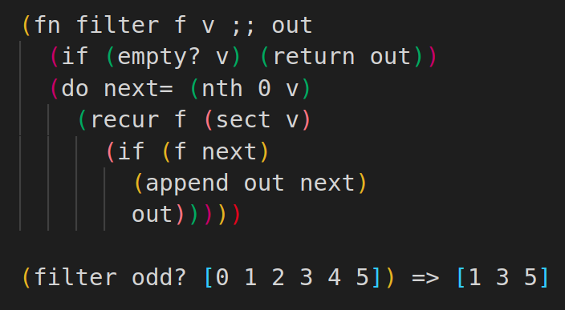

Poster - Software Dev. in Downhole Eng.
This poster by me was part of a gallery by all interns on site. It shows four screenshots of WinForms projects I developed solo.
 Click to enlarge.UK Computing Science Undergraduate
A primarily C# role in the oil & gas industry, with regular collaboration between other industry fields. Due to the nature of the work not much material is available to share. See my CV for the full job description.
This poster by me was part of a gallery by all interns on site. It shows four screenshots of WinForms projects I developed solo.
 Click to enlarge.The vision of the software management at the start of my role was to reign-in decades' worth of utilities and software suites to one communication protocol.
It was decided to use one akin to MQTT, which would be translated to an embed-suitable protocol on-the-fly. I helped architect and test this new platform with their senior engineer. It became the "Sondex Ultracom" platform.
After development, to begin developing a new Ultracom utility—however small—required including up to fifteen .NET libraries. It was required to use ever-evolving boilerplate to operate them. I couldn't tolerate this.
I was granted the time to investigate solving this issue, and architected what I called the "Kernel." It became the sole dependency on a project, and at runtime would use reflection to orchestrate one communication "daemon" and one or more "modules". The Kernel provided a thin abstraction between the two types of actor, and completely divorced our business logic from our communication logic for any project. It also made "modules" composable between each other, using MQTT. It sincerely was my favourite programming project of all time.
As an experiment I developed a C# web-server with an Ultracom MQTT backend, allowing you to remotely monitor and control devices over the internet.
The screenshot shows the web-app used, controlling and monitoring a caliper tool – used to measure the diameter and integrity of oil wells. Here the calipers were depressed by hand on one side.
Not only popular with coworkers, but the local visiting school for demonstrations too!
 Click to enlarge
Click to enlarge
I was made to learn MVP at work—something I thought wouldn't be of use to me at the time. Since then I've come to fully appreciate software patterns architectures.
Older coworkers managed to avoid good practise, resulting in very tightly-coupled, difficult to maintain programs. In an effort to combat this I wrote a document on how—and why—to use the Model-View-Presenter pattern in WinForms projects.
 Click to read PDF
Click to read PDF
3rd party comms. translation
Successful investigation and adoption of .NET Core
.NET Framework to Core automated porting utility
Combining and porting two firmware console utilities into one GUI
Ported critical a VB6 app to C#
Modernised a critical utility developed in the time of experimental comms.
Collaborated in a LabView adapter for Ultracom
Proof-of-concept proprietory database C# adapter
A simple scripting language for tool control
Proof-of-concept deterministic embedded histogram compression, 42% worse-case
Aid in revival of Azure DevOps use
Co-presented to local school children
Presented 45-min Q&A lecture on VBA to 55 UK-wide interns
Participated in "Dragon's Den" style Year 7's school activity
Histogram bulk experimental analysis suite
Monte-Carlo optical simulator implementing Snell's Law
Set out and delegated a data processing workflow
Collaborated to develop an equipment testbox with soft. utility
Virtual oscilloscope over USB & TCP/IP
Magnetic field 3-axis diagnostic app
It's been a dream to have a programmable pocket-PC, and my own programming language. So I am developing with a friend one called Chika. It uses s-expressions, pure functions, and immutable values. Already it has a core library and some basic drivers like OLED and keypad. Soon it will be able to compile itself on Arduino.
For the Global Games Jam 2018 another student and I built a game from scratch within 48 hours. Unfortunately, neither of us knew the correct graphical approach, but it was a fun and valuable experience, exposing my limits and abilites!
A totally new platform for managing inter-organisational legislation and voting. Hosted on a DigitalOcean 2.2GHz 1GB Droplet, the application runs on the JVM (Java Virtual Machine), and is written in Clojure - a modern functional-paradigm programming language.
I was struggling to learn SQL at University, and so created a basic vote-casting website in PHP, allowing 'organisations' to arrange voters in ranges, schedule ballots, and make use of 3 different counting systems. I ended up enjoying using link tables...
Using Android Studio, I developed a simple app which would allow daily goals with a deficit system, daily records, and handy buttons. I found it a lot more motivating than other apps!
I'd written a simple O(n^2) engine while bored, in SFML, but that wasn't challenging enough! I shoehorned it onto an ATtiny85, but it's 60x slower than the video...
The display also isn't perfect for it, as it eats 8-bit vertical stripes at a time.
Using an Atmel ATtiny85 with Arduino IDE, I constructed an inexpensive hit-detection device for the sport Fencing, Épée discipline. It needed to interface with the standard plug, operate within a 40ms timeframe, and power two weapons over a piste of 14m. I only went as far as a hand-soldered working prototype!

Using the Arduino platform (Due/Mega 2560) I implemented the arcade classic Pong to work through PAL TV. Two potentiometers acted as controllers for the paddles, emulating the nostalgic feel of the first consoles! Unfortunately difficult to record due to framerate.

Using the Arduino platform (Mega 2560) I ported this tutorial into Arduino C, and utilised the Adafruit SSD13076 library and TVout library for display. They both used the same interface for movement as the Pong game.

For my HND Applied Computing project, I chose to create an SFML/C++ raycaster using the same core-code as in projects above, but textured. I still have a lot to flesh out in order to make it a fun, dynamic game!
Written in C++ for Linux terminal, this program allows you to create and step-through simple yet functional circuits. The animation demonstrates a compact hh:mm:ss clock design being simulated.
More videosC++/SFML, completely rethinks the approach to an easy-to-use circuit simulator. Though the code for the terminal one is awful, I still prefer its functionality...

A simple implementation of the classic virtual Mahjong. Written in C++ using the SFML framework, it was a personal experiment into basic graphical applications.

I've always wanted to create something with even the semblance of an OS, so I created FlintOS. It loads programs from ATtiny85's EEPROM, and executes them with a basic instruction set. I wrote a binary reader and a writer, in the instruction set, so it's good to go.

Another simple implementation of a tile-based game, this app incorporates dragging, auto-placement, animated finish, and a timer with auto-pause. The newest version looks a little bit better, with a random rotation of cards!
A currently bare-bones Real Time Strategy game implemented in C++/SFML – my first isometric graphical program. My goal is to generate AI towns/villages, gigantic maps (JIT map building, etc), and try to create a realistic economic setting.
Requiring a less CPU-intensive solution, with approximate routes, I took on the fun challenge of writing my own pathfinding. Governed by 7 steps, I ported it into the RTS Game featured above. The video demonstrates its execution. Can still be optimised further.
As our college course was part-time, I helped implement a peer's HND project to her design documentation, using HTML/CSS/JS.
A black-box Brainf**k interpreter, implemented in C and Python. It uses simple registers to repeat commands and cache loops. Could be improved by implementing optimisations as suggested by its community, multi-threaded printing, and perhaps even rudimentary branching.
For an assignment in college we were required to show a basic understanding of machine code. I went one step further than basic Z80, and created my own Javascript emulator and instruction set.

In early 2016, two peers and I collaborated on a Linux-based terminal game, based around having a big expanse to explore, and AIs which would perform tasks autonomously. After the collaboration, I set out to write my own version of the AI my peers implemented, reducing the project to purely my code.
An networked-multiplayer Uno implementation in HTML/CSS/JS+PeerJS utilising WebRTC. With pastel colours and helpful notifications, it is suitable for a virtually unlimited amount of children & adults alike, wherever they are.